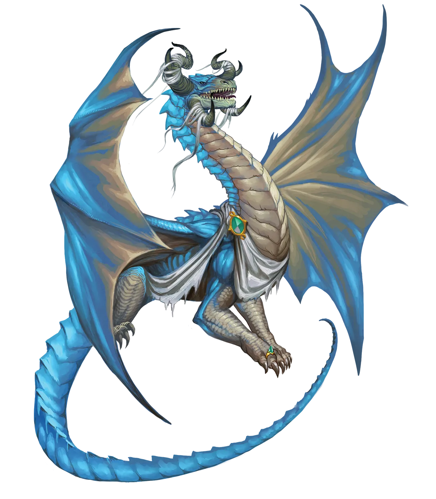
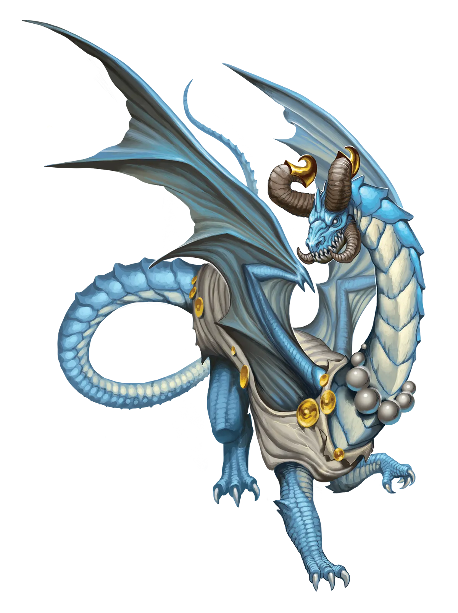

通向天空之路
永恒云龙类有时会过分执着于天空。他们因牺牲飞行能力哪怕片刻而痛苦不堪，这种感觉不断膨胀，占据他们生活中越来越大的部分。带有天空美学的宝藏和装饰品能有所助益，允许他们短暂升空的魔法或科技也同样如此。漂浮术和飞行魔法，乃至滑翔翼等载具，在渴望天空的永恒云龙类中极为流行。假以时日并付出足够努力，他们便能重新获得飞行能力，这种情绪也随之消退。
云龙 Cloud Dragon |
|
|
云龙类是天生的冒险者，他们在世界各地游历与探索，其生活方式与永光龙类极为契合，以至于他们不更常采用极光永仪式的唯一原因，或许就是仪式结束时那股深深的失落感，以及他们的魔法暂时削弱到无法再飞行的境地。作为风之存在，云龙类比任何其他龙类都更能敏锐地感受到这种失落，他们视自己为被大地束缚的囚徒，直到积攒足够的力量再次翱翔天际。传统派云龙类对永恒云龙类并无特别的敌意，但听闻自己认识的某条龙成为永光龙类时，通常会令传统派云龙类因感同身受的痛苦而皱眉，就好比看到某人遭受可怕损伤时的感觉，因为他们会设想那种失落降临在自己身上。这使得传统派云龙类在面对无法飞行的永恒云龙类时感到不安，常常会明显地在这些场合中显得局促不安。一旦永恒云龙类重新获得翅膀，这种反应便如薄雾般消散，他们与同族传统派之间的交往便再无此类阻碍。 云龙类活在当下，因此非常适合永光龙类快节奏的生活方式；事实上，这与他们平常的生活方式并没有太大不同！主要区别在于，大多数云龙类在冒险中大部分时间只是旅行，往往安全地凌驾于任何可能的风险之上，只有在遇到令其感兴趣的事物时才短暂互动。相比之下，永恒云龙类更常深入险境。为了锻炼魔法并增强力量，他们需要投身于紧张刺激、挑战极限的处境，仅仅掠过威胁而过的做法是行不通的。但他们漂泊不定的本性和收藏各种奇珍异宝的习惯却丝毫未变。永恒云龙类倾向于与不受单一地点束缚的冒险队伍结伴，并尽量避免在地下冒险太久，因为那里看不到天空。除此之外，他们极为灵活，能与大多数其他永光龙类及异族成员相处融洽。虽然云龙类活在当下且常常仓促决策，但他们以极大的智慧和判断力行事，因此这种倾向很少像不明智的仓促决定那样引起与同伴之间的摩擦。即使是与喜欢深思熟虑的同伴同行时，情况也通常如此，因为许多人欣赏云龙类能迅速找到良策。问题出现在云龙类在几个选项中选择了最佳方案，却依然遭遇糟糕或好坏参半的结果，而其他选择的结果却永远无从知晓。这可能会让更有条不紊的盟友担心云龙类草率的决定可能是错误的。永恒云龙类常常转职为特别灵活移动的职业，如武僧，或擅长探索的职业，如游荡者或魔契师，以体现他们热衷于收集各式奇珍的爱好。 通向天空之路 永恒云龙类有时会过分执着于天空。他们因牺牲飞行能力哪怕片刻而痛苦不堪，这种感觉不断膨胀，占据他们生活中越来越大的部分。带有天空美学的宝藏和装饰品能有所助益，允许他们短暂升空的魔法或科技也同样如此。漂浮术和飞行魔法，乃至滑翔翼等载具，在渴望天空的永恒云龙类中极为流行。假以时日并付出足够努力，他们便能重新获得飞行能力，这种情绪也随之消退。 云龙特质 Cloud Dragon Traits 你出身于一脉来自气元素位面、充满好奇心且热爱漫游探索的云龙世系。 |
  |